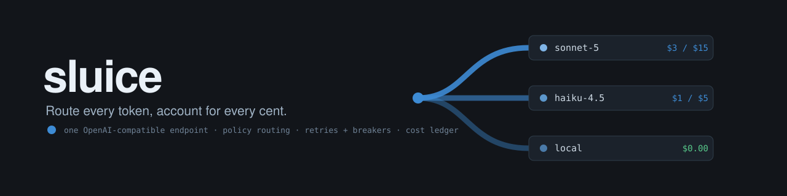

$0.000000
total cost, 7-request demo batch, all served local
Route every token, account for every cent.
Teams that only ever call one hosted model API tend to have no answer to two questions: what does a single request cost, and what happens when the provider rate-limits or goes down. Sluice exposes one OpenAI-compatible endpoint and, per request, decides which backend should serve it: a free local llama.cpp server, Claude Haiku, or Claude Sonnet. Every request gets a deterministic, explainable routing decision, per-request cost accounting in a SQLite ledger, retries with backoff, fallback chains, circuit breaking, and OpenTelemetry traces.

source: ./scripts/demo.sh run 2026-07-07 · Apple M4 Pro 24 GB · LFM2.5-1.2B Q4_K_M via llama-server (Metal) · ANTHROPIC_API_KEY unset · ledger output verbatim below
Hosted gateways (Vercel AI Gateway, OpenRouter) already do provider failover and cost/latency routing, so Sluice is not trying to be a SaaS gateway. It is the self-hosted, auditable version for teams that cannot send every request through a third party (on-prem, VPC, data-residency, a local model in the mix) and want the routing policy and the cost ledger to be code they own and can reason about, not a dashboard.
A deterministic complexity heuristic assigns a tier: complex for tool use or ~1500+ estimated tokens, moderate for code markers or 300+ tokens, simple otherwise.
(policy, tier) looks up a backend chain in sluice.yaml. Policy comes from X-Sluice-Policy (cheap, balanced, quality). Every default chain ends in local, so the gateway degrades to free inference instead of failing.
X-Sluice-Max-Cost-USD drops backends whose pre-flight estimate exceeds the cap; dropped backends are named in the route reason. X-Sluice-Latency-Budget-Ms sets a request deadline that clamps timeouts and skips doomed retries.
Per-backend circuit breakers, exponential backoff with jitter on 429/5xx/timeouts, fallback to the next backend in the chain, per-backend timeouts. The winner's hop count lands in the ledger as fallback_hops.
Every request is recorded in SQLite: backend, model, real token counts from upstream usage, estimated cost at real per-MTok prices, latency, route reason, status. Answers arrive with X-Sluice-Backend, X-Sluice-Est-Cost-USD, and X-Sluice-Route-Reason headers.
POST /v1/chat/completions
|
+-----------------+
| route-decision | complexity heuristic -> tier
| (span) | policy + tier -> backend chain
+-----------------+ max-cost cap filters the chain
|
chain: [claude-haiku, local]
|
+-----------------v------------------+
| execution engine |
| per-backend circuit breaker |
| retries: exp backoff + jitter |
| fallback to next backend in chain |
| per-backend timeout / deadline |
+----+----------------+---------+----+
| | |
+-----v----+ +------v-----+ +----------+
| local | | anthropic | | openai- |
| llama.cpp| | (sonnet, | | generic |
| $0/MTok | | haiku) | | |
+----------+ +------------+ +----------+
Two artifacts back every claim: 61 offline tests that assert backoff sequences, breaker transitions, fallback ordering, cost-cap drops, deadline 504s, streaming, and both directions of the Anthropic translation exactly; and a demo script whose ledger output is reproduced here unedited. One request in the batch took a real 401 from api.anthropic.com and fell back to local in the same request.
By backend key reqs ok prompt_tok compl_tok cost_usd p50_ms p95_ms tok_s local 7 7 240 297 0.000000 233.0 697.0 130.2 Totals requests 7 ok 7 with fallback hops 1 total cost usd 0.000000 p50 latency ms 233.0 p95 latency ms 697.0
policy=quality tier=simple signals=[prompt~16tok] chain=local
dropped=[claude-haiku(est=$0.000616>cap=$0.000000),
claude-sonnet(est=$0.001232>cap=$0.000000)]
backend in $/MTok out $/MTok batch cost local (measured) 0.00 0.00 $0.000000 claude-haiku-4-5 (estimate) 1.00 5.00 $0.001725 claude-sonnet-5 (estimate) 2.00 10.00 $0.003450 # estimates use the local model's token counts at the # per-MTok rates in sluice.yaml; Anthropic tokenizers # differ, so treat them as order-of-magnitude.
The absolute numbers are tiny because the batch is tiny; the point is the mechanism. The ledger prices every request at the serving backend's real rates, so at production volume the report directly answers what routing policy X cost today.
All 61 tests run offline against fake backends. The demo needs a GGUF and a built llama.cpp; rerunning it regenerates every number on this page on any machine.
$ uv sync $ uv run pytest # 61 tests, all offline $ MODEL=path/to/model.gguf ./scripts/demo.sh $ uv run sluice serve # http://127.0.0.1:8091 $ uv run sluice report # cost/latency from the ledger
$ curl http://127.0.0.1:8091/v1/chat/completions \ -H 'Content-Type: application/json' \ -H 'X-Sluice-Policy: balanced' \ -H 'X-Sluice-Max-Cost-USD: 0.002' \ -d '{"messages":[{"role":"user","content":"hi"}], "max_tokens":100}'
tool role messages (tool results in the conversation) are not translated.This section is not small print. A latency number without its failure modes is an advert, and this page is a datasheet.